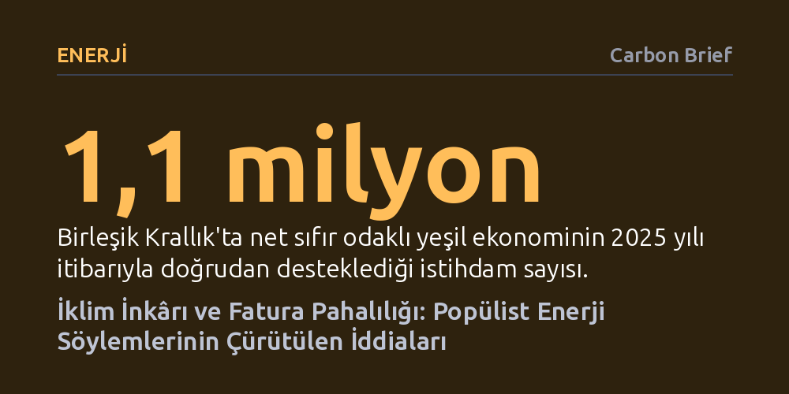

ENERJI · Carbon Brief · 2026-09-12
İklim krizindeki sıcaklık artışının neredeyse tamamı insan faaliyetlerinden kaynaklanıyor ve Birleşik Krallık'taki elektrik faturalarını artıran asıl unsur net sıfır politikaları değil, pahalı doğal gaz bağımlılığıdır. Düşük karbonlu ekonomiye geçiş refahı baltalamak yerine büyümeyi destekliyor ve temiz enerji sektöründe yüz binlerce yeni istihdam yaratıyor.
Enerji krizlerinin ve artan faturaların sorumlusu olarak gösterilen yeşil dönüşümün aksine, pahalılığın asıl failinin fosil yakıt bağımlılığı olduğunu ve net sıfırın ekonomik bir külfet değil büyüme fırsatı sunduğunu gösterir.

Son yıllarda yükselen popülist siyaset, iklim biliminin onlarca yıllık birikimini hedef alarak küresel ısınmayı güneş hareketlerine ya da volkanik patlamalara bağlayan iddiaları yeniden gündeme taşıdı. Oysa bilimsel veriler tartışmaya yer bırakmayacak kadar nettir: Sanayi Devrimi'nden bu yana yerkürede kaydedilen yaklaşık 1,4 derecelik sıcaklık artışının neredeyse tamamı doğrudan insan kaynaklı sera gazı salımlarından ileri gelmektedir. Hükümetlerarası İklim Değişikliği Paneli'nin (IPCC) ortaya koyduğu üzere, atmosferdeki karbondioksit yoğunluğu son iki milyon yılın en yüksek seviyesine ulaşmıştır.
İklim politikalarını hedef alan çevreler, doğanın her yıl yüz milyarlarca ton karbondioksit saldığını öne sürerek insanın payının önemsiz olduğunu iddia eder. Oysa bu yaklaşım gezegenin doğal karbon döngüsünü bütünüyle çarpıtmaktadır. Sanayi öncesi çağda okyanuslar ve karalar saldıkları kadar karbonu geri emerek dengeli bir denge sağlıyordu; insanlık ise fosil yakıtları yakarak bu kapalı döngünün kaldıramayacağı net bir fazlalık yarattı. Volkanik hareketler ve güneş döngüleri kısa vadeli küçük oynamalar yaratsa da uzun vadeli küresel ısınma eğiliminde belirleyici hiçbir paya sahip değildir.
İklim hedeflerine karşı yürütülen dezenformasyonun merkezinde, net sıfıra ulaşmanın ekonomileri iflas ettireceği ve trilyonlarca sterline mal olacağı savı yer alır. Bu tür şişirilmiş rakamlar; mevcut fosil yakıt altyapısının hiçbir maliyeti olmadığını, petrol ve gazın bedavaya temin edildiğini varsayan ve temiz teknolojilerin getireceği devasa işletme tasarruflarını tamamen yok sayan hatalı modellere dayanır. Oysa bağımsız denetim organları ve şebeke operatörleri, sıfır karbonlu bir enerji sisteminin toplam maliyetinin fosil yakıtlara dayalı bir sistemle neredeyse aynı olduğunu ortaya koymaktadır.
Birleşik Krallık İklim Değişikliği Komitesi'nin (CCC) güncel hesaplamalarına göre, 2050 yılına kadar net sıfıra ulaşmanın net yatırım maliyeti yaklaşık 108 milyar sterlindir; bu da milli gelirin yalnızca yüzde 0,2'sine tekabül eder. Üstelik bu sermayenin yüzde 65 ila 90'ı kamu bütçesinden değil, özel sektör yatırımlarından sağlanacaktır. İklim krizinin getireceği yıkıcı hasarların önlenmesi ve elektrikli sistemlerin yüksek verimliliği hesaba katıldığında, ülkenin iklim hedeflerini tutturmasının getireceği net ekonomik faydanın 865 milyar sterlini aşacağı öngörülmektedir.
Net sıfır hedeflerinin sanayiyi çökerttiği ve yüz binlerce kişiyi işsiz bıraktığı iddiası tarihsel verilerle çelişmektedir. Birleşik Krallık'ta kömür, çelik ve ağır sanayi kollarındaki istihdam kayıpları iklim mevzuatlarının yürürlüğe girmesinden on yıllar önce; küreselleşme, dış rekabet ve otomasyon gibi sebeplerle 1960'lardan itibaren başlamıştır. Nitekim Birleşik Krallık 1990'dan bu yana sera gazı emisyonlarını yüzde 54 azaltırken, aynı dönemde ülke ekonomisi iki katına yakın büyüme kaydetmiştir.
Dönüşüm süreci mevcut iş gücünü tasfiye etmek yerine yeni ekonomik dinamikler üretmektedir. 2024 yılı itibarıyla temiz enerji sektöründeki çalışan sayısı, ülke tarihinde ilk kez petrol ve doğal gaz sanayisindeki toplam çalışan sayısını geride bırakmıştır. Yeşil ekonomi 2025 yılında 105 milyar sterlinlik katma değer üretip 1,1 milyon kişiye ortalamanın üzerinde ücretlerle iş sağlamıştır. Fosil sektörlerde yaşanabilecek kademeli gerilemeye karşın, yenilenebilir enerji ve enerji verimliliği alanlarında yaratılacak net yeni istihdamın yüz binleri bulacağı belgelenmektedir.
Halkın belini büken elektrik faturalarını yeşil politikalara fatura etmek, piyasanın işleyiş gerçeğini gizlemektedir. Birleşik Krallık'ta elektrik fiyatlarını belirleyen temel unsur, şebekeyi besleyen doğal gaz santralleridir. Sistemin toptan elektrik fiyat mekanizması marjinal maliyete dayandığı için, elektrik fiyatını çoğu zaman en pahalı kaynak olan gaz belirlemekte ve küresel piyasalardaki gaz dalgalanmaları doğrudan tüketiciye yansımaktadır. Son yıllarda elektrik faturalarındaki artışın en az üçte ikisi doğrudan pahalı doğal gazdan kaynaklanmıştır.
Rüzgâr ve güneş gibi yenilenebilir enerji santralleri ise jeopolitik krizler ve savaşlar sırasında elektrik fiyatlarını dengeleyen en güçlü tampon vazifesini görmüştür. Temiz enerji kapasitesi büyüdükçe elektrik fiyatlarının gaz fiyatlarından ayrışmaya başladığı gözlemlenmektedir. Çözüm iklim hedeflerinden geri adım atmakta değil; piyasa düzenlemelerini yenileyerek temiz enerjinin düşük üretim maliyetini doğrudan faturalara yansıtacak reformları hayata geçirmektedir.